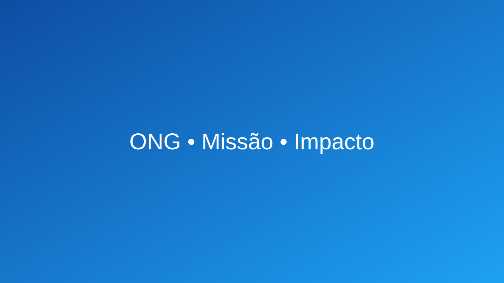

Nossa missão é ampliar o impacto social com transparência
Conectamos pessoas, projetos e recursos para transformar realidades locais.
Quem somos
Somos uma organização da sociedade civil dedicada a educação, segurança alimentar e inclusão digital. Atuamos com governança, responsabilidade e resultados mensuráveis.
- Missão Promover dignidade e oportunidades.
- Visão Tornar-se referência em impacto comunitário sustentável.
- Valores Transparência, inclusão, sustentabilidade.
Contato
Endereço
Rua da Solidariedade, 100 — Campos dos Goytacazes/RJ
Atendimento: seg–sex, 9h–17h
Fale conosco
E-mail: contato@sementesolidaria.org
Telefone/WhatsApp: (22) 99999-0000